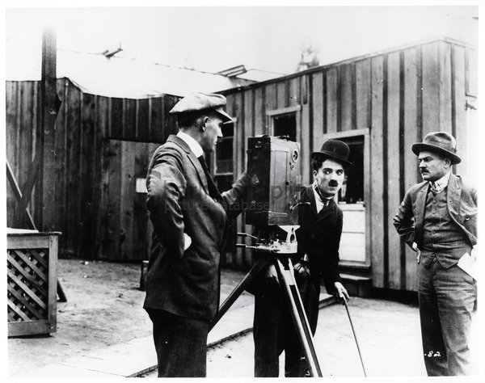

קצת רקע: צ'ארלי צפלין, נולד ב1889 כאן בלונדון, אביו היה שחקן וסולן ואמו הייתה רקדנית. כשהגיע לגיל עשר, אביו נפטר ואמו הייתה חולה מאוד, צ'אפלין ואח שלו סידני היו צריכים להסתדר לבדם.
1910-1911 צ'אפלין שט אל ארצות הברית, צ'ארלי נאהב מהר מאוד על ידי הקהל האמריקאי בזכות המחזה ששיחק בו: "A Night in an English Music Hall " ולאחר מכן ב1912 קבוצת פרד קרנו הציעו צ'אפלין חוזה לצילום ראינוע. לבסוף בנובמבר 1913 הסכים צ'אפלין לחוזה, כשהוא החל לשחק שכרו ההתחלתי היה 150 דולר לשבוע, אך הצלחתו המסחררת, עוררה מפיקים אחרים לעשות משא ומתן על שירותיו.
כשהחוזה של צ'אפלין עם קבוצת פרד קרנו נגמר (1915) הצטרף צ'אפלין לאולפני Essanay וקיבל בונוס משמעותי לשכרו. כשנה לאחר מכך צ'אפלין היה כל כך מבוקש לשחק בסרטים, חתם ב Mutual Film Corporation שהייתה חברה הרבה יותר גדולה והכין איתם 12 סרטים! וביניהם הסרט Easy Street נחשב כאחד הסרטים הכי טובים שלו.
ב1917 נגמר החוזה של צ'אפלין עם Mutual Film Corporation והחליט להתחיל להיות מפיק עצמאי והתחיל בבניית סטודיו לצילום . בתחילת 1918 צ'אפלין נכנס להסכם עם First National Exhibitors’ Circuit שהיה ארגון מיוחד בשביל לעשות משהו עם התמונות שלו. הסרט הראשון שהכין איתם dog life לאחר הסרט הזה צ'אפלין הפנה את תשומת ליבו לסיור לאומי לצורך המאמץ המלחמתי.
הסרט המסחרי הבא שלו היה הפקת קומדיה העוסקת במלחמה. “Shoulder Arms ", שיצא בשנת 1918 בזמן הכי טוב שיכל להיות, הכניס הרבה כסף והוסיף לפופולריות של צ'פלין.
לאחר ההפקה הזאת הוציא עוד 2 סרטים, ובאפריל של אותה שנה, צ'פלין הצטרף למארי פיקפורד, דגלס פיירבנקס ודויד ו. גריפית כדי להקים את United Artists Corporation. העשור האחרון בשביל צ'פלין היה מעולה, התחיל את הקריירה ובתוך כמה שנים נהיה לאחד השחקנים הגדולים בעולם! ולמרות שבילה את רוב חייו באמריקה הוא נולד כאן בבריטניה ואנחנו כעם גאים בו .ומאחלים לו בהצלחה בהמשך הקריירה